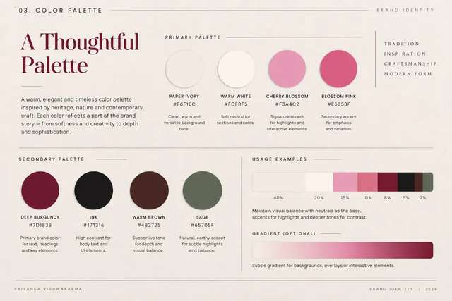
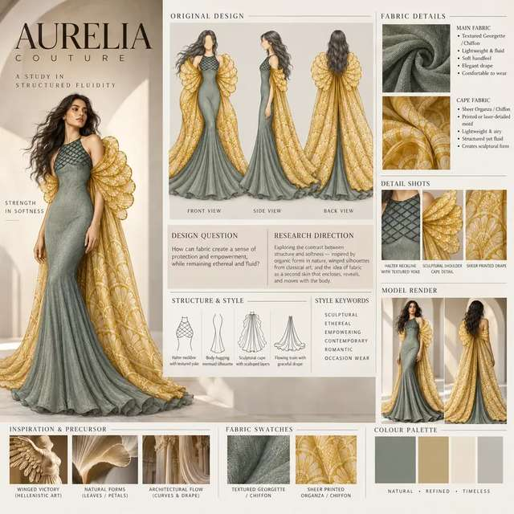
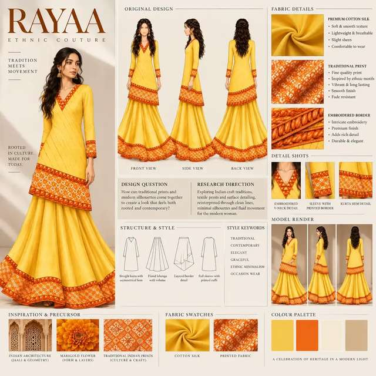
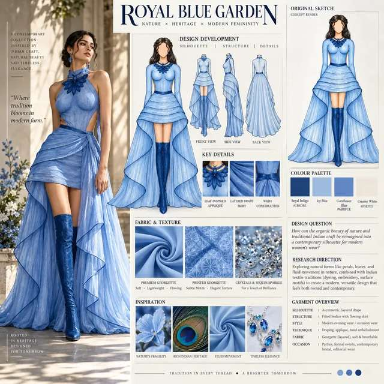

The Azure Heirloom

A contemporary translation of heritage.
The collection explores spirituality, architecture and traditional weaving through a restrained blue, ivory and gold visual language. The objective is not to reproduce heritage literally, but to translate its rhythm, border, structure and atmosphere into contemporary womenswear.



Colour establishes the emotional architecture.
Azure is used as the dominant field, balanced by ivory and restrained metallic warmth. This gives the work a clear identity while allowing surface and silhouette to remain legible.


Structure, drape and ornament move together.
Silhouettes explore fitted and flowing relationships, layered volume, statement details and decorative borders. Surface development supports the form rather than becoming decoration without function.



Final outcome.
The completed direction combines heritage references, textile thinking and contemporary womenswear into a coherent collection identity.